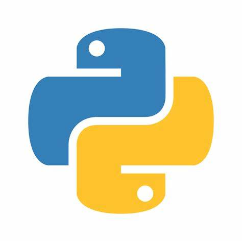

Hi, I'm Kushagra
A student
Studying in Srm University
Get to know more
About Me


I am a student
pursuing B.Tech in Computer Science and Engineering (CSE) at SRM Institute of Science and Technology, KTR.
My passion for technology drives my interest in coding, where I enjoy solving problems and creating innovative solutions.
Outside of academics, I have a love for sports, especially volleyball, which keeps me active and allows me to work collaboratively with my teammates.
Balancing my studies with my interests, I strive to excel both in my coursework and on the court.
Interests
- Love Programming
- Making Webpages
- Volleyball and Cricket

Explore My
Skills
Programming Languages
Basic Knowledge of
- Python, C, Java
- MySQL and HTML



Problem Solving
- Developed analytical skills through various coding projects and exercises.
- Efficiently break down complex problems into manageable parts.
- Continuously improve by learning from mistakes and seeking out new knowledge.
Web Development
- Gained hands-on experience with HTML to create basic web pages.
- Built simple web interfaces, focusing on layout and structure.
- Able to manipulate colors, fonts, and layouts using CSS properties.
- Continuously exploring more advanced web development skills, like JavaScript, to enhance interactive and dynamic web experiences.
Coding Basic
- Solid understanding of fundamental programming concepts
- Ability to write and debug simple programs in Python and C, handling tasks like data manipulation and basic algorithms.
- Proficient in HTML for web development, understanding how to structure and format web content.
- Understanding of basic error handling and debugging techniques to solve issues efficiently.
Browse my recent
Projects

Created a simple Notepad app with a user-friendly interface using Python's Tkinter module. Features include new file creation, opening, saving, and basic text editing. The app uses menu options for file operations and an editable text area
Developed a Library Management App using Python’s Tkinter module to create an interactive GUI. Features include adding, deleting, searching for books and tracking book returns, managing member details. The app provides seamless navigation through menu options and uses Tkinter’s widgets for a polished interface.
See more of my projects at
GitHubContacts